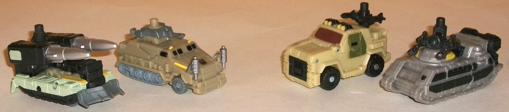
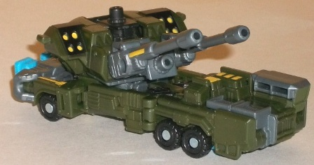
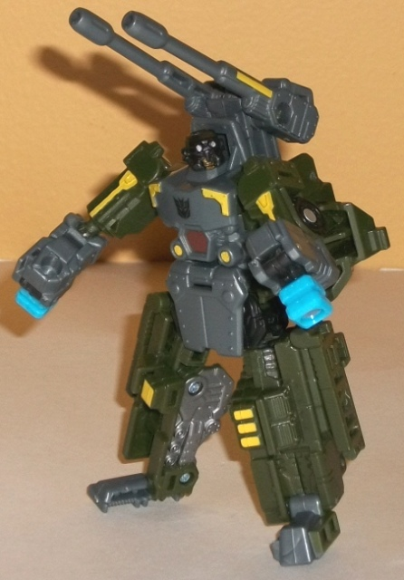
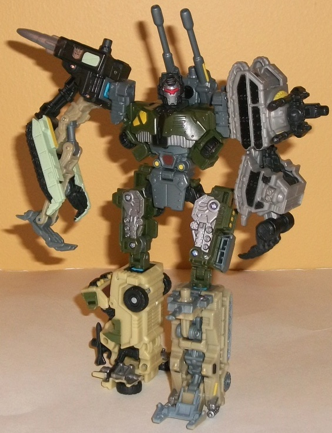

Bombshock
w/ Combaticons
Bombshock
w/ Combaticons
Combaticons

Allegiances:
Decepticons
Difficulty of Transformations
: Automatic
Color Schemes
: Black, dull milky
tan, light milky tan, light milky gray, milky bluish gray, and some silver,
metallic gunmetal gray, glossy pastel green, yellow, dark metallic bronze,
and dark military green
Individual Rating
: 7.4
The first Combaticon
vehicle up is dual-missile anti-aircraft tank. And MAN, those are some
BIG missiles it's got up there, to the point of being a bit comically oversized.
The point is certainly gotten across, though, and otherwise the tank's
proportions are fairly good. There's also plenty of mold detailing, with
panels and "rivets" molded in all over the little vehicle-- the treads
look particularly impressive given their small size (though they don't
work, alas-- there are little wheels on which this guy rolls). The bits
that make up parts of the arm tend to stick out a bit in the middle, but
the oversized missiles (which don't fire) do a fairly good job of covering
up those parts from most angles. The green used for a lot of the tank armor
is a bit...well...puke-colored, but it does admittedly go together well
with the black, which is the main color of this guy. The bluish gray and
tan serve as nice-- if fairly bland-- secondary colors, and the yellow
accents unfortunately are only used along with the light green, against
which they really don't contrast well. As an arm, this vehicle forms one
of the better limbs from the first half of the Power Core Combiner line--
yeah the middle is a bit skinny, but it sticks in its socket quite well,
and the missle pods form an effective shoulder with the front shovel becoming
some evil-looking claw-hands.
Next up is the other
arm-vehicle, another anti-aircraft tank, but with two cannons instead of
missile launchers. The mold detailing on this one is still incredibly impressive
for such a small toy, but there's a bit of an obvious arm-mode extra--
namely, the big fat claw on the backside of this mode. The bland color
scheme of bluish gray and black also leaves a lot to be desired, though
the couple of yellow paint apps do provide some nice contrast here. The
cannons themselves can rotate, giving this guy a little bit of movement
in vehicle mode. In arm mode, this one doesn't really transform much--
rather, it just lengthens slightly and looks rather odd doing it, going
from a chunky shoulder to a very skinny "elbow" (no, unfortunately this
guy does't have elbow movement, like any other Power Core limb-bot) to
a chunky lower arm. The claw works quite well as the hand, though, and
having the cannon on the shoulder looks fairly nice. This one does tend
to come off its port a bit easier than most other Power Core limbs, though,
so fair warning.
Third up among the Combaticons
is the 4WD armored vehicle. The proportions among this one are definitely
the wonkiest among all the Combaticon limbs, with an oversized front bumper
and the whole vehicle mode looking like it was "squished in" a bit form
the sides. (Not to mention in comparison to the others, this one is way
out of scale, but of course if you're a scale aficionado this maaay not
be the line for you in the first place.) The mold detailing is also a bit
more simplistic because of the supposed "smaller scale" of this vehicle,
though it's certainly still decent enough. The milky tan coloration, along
with the vehicle mode choice, reminds me of Swindle, appropriately enough,
and the bronze, black, and dark green highlights go quite well against
the main tan color, serving as a nice color scheme while still being realistic.
In addition, the rear-mounted missiles on this guy can rotate, giving him
a bit of movement. In leg mode, the front bumper plugs into the port (as
opposed to the rear bumper like with most Power Core limbs), while the
rear two-thirds of each side fold down into an odd-looking "foot". Oh,
and part of the roof swings out to the side for a reason I'm not sure of--
maybe just to make the transformation look a bit more complicated, I guess?
Anyways, this is definitely a bit of a weak foot, made all the worse by
the fact that it comes undone from its port at the drop of a hat. This
is my least-favorite Combaticon.
Last but not least is
the other leg-vehicle, a halftrack military vehicle. The oversized-- and
oddly-placed-- smokestacks at the front end of the vehicle make it rather
obvious that they're part of the feet, bu totherwise this mode looks very
nice proportionally, and has the same fairly detailed mold sculpt that's
on most of the other Combaticon limbs. The color scheme of dull tan and
milky bluish gray is blah, but I suppose it gets the job done, and it's
outright loud and clashy. The black-painted windows and couple of yellow
paint apps to help to break up all the tan a bit, as well. Even though
you think it would, the top-mounted cannon can't rotate, but rather stays
in place. Bummer. In leg mode, a good portion of the front section folds
down to form a very nice-looking and stable leg, while the top-mounted
cannon rotates up so that it still points forward even as a "kneecap".
Plus this Combaticon fits very solidly on his port, making this one my
favorite Combaticon among the bunch.
Most of the Combaticons
look pretty good in both modes, making them one of the better Power Core
Combiner limb sets to come along. Even if visually their color schemes
aren't striking, they have great mold detailing. The dual-cannon arm-vehicle
has a slightly weak connection, but otherwise they're pretty nice-- except
for the 4WD vehicle, which is the definite loser of the group with his
odd proportions, weak leg mode, and weak connection port.
Bombshock



Allegiance
: Decepticon
Difficulty of Vehicle/Robot Transformation:
Easy
Difficulty of Torso Transformation
:
Medium
Color Scheme
: Dark military green,
dark milky bluish gray, and some black, yellow, dull metallic bronze, dull
reddish brown, metallic gunmetal gray, light sky blue, and light red
Individual Rating
: 8.0
Bombshock's vehicle mode
is an anti-aircraft military vehicle, and the thing that immediately stands
out about this mode is its impressive amount of firepower (well, imaginary
firepower, that is-- nothing can actually fire). There are some BIG dual
guns which can each move up and down independently, and there's also two
missile pods, all of it attached to a turret that can rotate (though it
does run into a bit of resistance if you turn it about 40-45 degrees).
They're a bit TOO large proportionally in comparison to the rest of the
vehicle, but at this size I don't mind overly large guns. The proportions
on this mode are GENERALLY otherwise okay, but the robot mode extras are
what really can detract from this mode. The back end of the mode is rather
obviously just Bombshock's arms pressed together at the fists, and the
two blue combiner ports hang out the back end in a rather ugly manner.
With the turret facing forward, that's about the only obvious extra-- however,
if you turn the turret to face an angle more perpendicular to the rest
of the vehicle, you can easily see the upper legs of the robot mode in
front of it, as well as a fairly large ugly gap behind it, in front of
where the arms meet to form the back end. The color scheme itself is certainly
fitting for a military vehicle, however-- the dark green works quite well
when contrasted against the yellow highlight paint apps, though I wish
the bluish gray was a few shades lighter to make it stand out against the
dark green a bit more-- as it is, unless the light is strong the dark green
and dark grayish blue almost look like the same color.
In robot mode, Bombshock's
a bit of a diminuitive sucker due to the big missile pack/turret on his
back. His proportions also tend to be pretty good in this mode, though
his head is a bit small. He's also considerably more free of alt mode kibble,
with most pieces collapsing agianst his limbs or just hanging behind his
back to make his silouhette more dynamic, like his turret. That said, two
of his combiner powers just hang RIGHT off his fists, in a very unsightly
and ugly manner-- this would be the case regardless of the color, but it's
made all the worse by the fact that all Power Core Combiner ports are that
light blue color! The increased paint detailing and color variety in this
mode help to make this mode look a bit more attractive than his vehicle
mode in that respect, particularly with all the different-colored highlights
on his chest. His mold detailing is also quite good, with little "rivets",
"gears", and "panels" everywhere-- the sides of his legs facing each other
are particularly impressively detailed. I also love his head design, with
little military-esque "goggles" molded above his actual eyes. As far as
articulation, it's pretty good-- he can move at the shoulders, elbows,
neck, hips (at two points), waist, knees (at two points), and ankles. However,
it should be noted that his waist and hip articulation is severely restricted
by the big turret piece on his back. Also, because his feet don't have
heels and he's a tad back-heavy because of said turret on his back, he's
not the most stable Power Core Combiner in this mode.
Bombshock's torso mode
is the highlight of the toy, and likely the reason for many of his downsides
in his other two modes. The way his turret folds over his regular robot
chest to form the combined chest is simply ingenious, and his normal arms
connect firmly to the sides of the new turret-torso to form the shoulders.
The two dual guns still sit over his shoulders, but it's a very solid-looking
torso that's also pretty different-looking from his normal robot torso.
I also love the asymmetrical details on the chest, and the "welding mask
w/ visor" look of his face is lovely. Unfortunately, his normal robot mode's
legs very obviously just turn to the sides and flip out the combiner ports
to become the combiner's upper legs, and it doesn't match up nearly as
well to how good the rest of his torso mode looks. However, this is partially
forgivable as Bombshock's torso mode is a bit more articulated than most
Power Core Combiner's-- the areas just next to the torso's shouldersand
knees can move up and down at an additional point, and his waist can even
rotate if you lift up his "skirt" a little! On the other hand, Bombshock's
Powerlinx ports in this mode are rather oddly-placed-- they're only on
the back if his head and in between his two shoulder-guns, so trying to
place a Minicon in armor mode on Bombshock is pretty much impossible, at
least if you want to make it look good.
Bombshock's vehicle
mode is rather poor and his robot mode merely average, but he makes up
for it with a stellar torso mode (and the best torso mode out of the Wave
1 Power Core Combiners, in my opinion). Although not perfect by any means,
if you're only going to get one of the "team" 5-packs from the 2010 waves
of Power Core Combiners (i.e., Waves 1-3), make it this one.
Bombshock w/ Combaticons Bio
:
Bombshock was once a member of the most
elite unit in the Cybertronian military. He betrayed his comrades, and
his reward was to become commander of a powerful Decepticon Power Core
team. Even alone, each of his drones has as much firepower as the average
Autobot. Together, they are nearly unstoppable.
Strength: 9.0
Intelligence: 7.0
Speed: 6.0
Endurance: 10.0
Rank: 7.0
Courage: 9.0
Fireblast: 10.0
Skill: 7.0
Reviews by Beastbot
Back to Power
Core Combiners Index